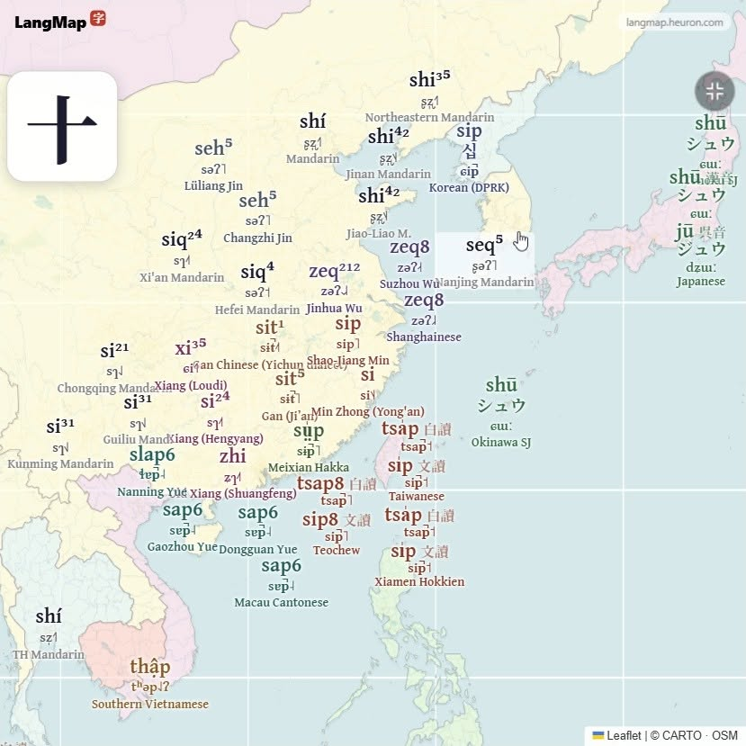

Sinosphere · · revised · Facebook post
Why Is 十回 Read "Jikkai" and Not "Jūkai"?
- In Japanese, 十 alone is jū, but 十回 "ten times" is jikkai, with a doubled consonant.
- The reason is an old -p at the end of 十, which Korean sip, Cantonese sap and Vietnamese thập still pronounce.
- Japanese lost that -p in most places, but kept a trace of it in the little pause before the next consonant.

Contents
Ten, and ten times
In Japanese, 十 on its own is:
十 (jū) = ten
Add 回, "times":
十回 (jikkai) = ten times
Not jūkai.
The same thing happens with other counters:
十本 (jippon) = ten long things
十分 (jippun) = ten minutes
But:
十円 (jūen) = ten yen
十人 (jūnin) = ten people
Where does that jik- come from? And why does it only appear before some sounds?
The answer is a consonant that Japanese lost centuries ago.
Ten used to end in -p
Look at the Han Map for 十:
Korean: 십 (sip)
Cantonese: sap6
Vietnamese: thập
Taiwanese: si̍p (literary), tsa̍p (colloquial)
Meixian Hakka: sṳ̍p
All of them end in -p.
That is not a coincidence. Middle Chinese, the ancestor of the Chinese varieties and the source of the Korean, Vietnamese and Japanese readings, had it too: the Han Map's Middle Chinese reconstruction (in the Qieyun system) gives *dʑip. Baxter–Sagart reconstruct Old Chinese *t.[g]əp. The -p was there from the beginning.
Mandarin lost it:
Mandarin: shí
Some Chinese varieties kept a trace of it as a glottal stop, a sudden catch at the end of the syllable:
Shanghainese: zeq8
Nanjing Mandarin: seq⁵
So the question is really: what did Japanese do with that -p?
What Japanese did with the -p
Japanese syllables do not normally end in p.
So when the word was borrowed, Japanese added a vowel. The Han Map gives the old Japanese reading as ジフ, written jifu in old kana spelling.
Over time, that f weakened to w and melted into the vowel, and jifu became the modern jū.
That is why 十 standing alone sounds nothing like Korean sip.
But in compounds, something else happened.
When ジフ came right before a voiceless consonant like k, s, t or p, the old ending did not become a vowel. It turned into a short pause, the sokuon, written with a small っ:
ジフ + カイ → じっかい (jikkai)
The fu shrank into the k of kai, doubling it.
Before a vowel or an n, as in jūen and jūnin, there was no voiceless consonant to double, so the long vowel won.
Not only ten
十 is not alone. Other characters that once ended in -p behave the same way.
合 (gō): 合唱 (gasshō) = chorus, 合戦 (kassen) = battle
Old kana spelled 合 as ガフ, the same -fu ending as ジフ.
Japanese has the same kind of double life for characters that ended in -t and -k, but those kept a full syllable, -tsu, -chi, -ku or -ki. The -p characters are the ones whose ending melted into a long vowel on its own, and survives as a consonant only in compounds.
Many speakers today also say jukkai and juppun, rebuilding the compound from the modern jū. Dictionaries have traditionally given jikkai and jippun.
One fossil, one pause
Back to the map.
Korean sip. Cantonese sap. Vietnamese thập.
Three languages still pronounce the old -p out loud.
Mandarin dropped it. Shanghainese turned it into a catch in the throat.
And Japanese kept it in only one place: a tiny pause before the next consonant.
Every time a Japanese speaker says "jikkai", a Middle Chinese -p is still there, hiding in the gap.